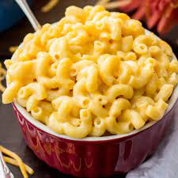

Mac & Cheese

Crisp on top, oozing with sauce and with perfectly cooked pasta,
my Super Simple Macaroni Cheese is totally delicious,
ready in just 20 minute and so simple to make perfect for
those busy days when you just want something easy!
Ingredients
- 300g macaroni
- 30g butter
- 25g flour
- 500ml milk
- 1tsp Dijon Mustard
- 200g mature cheddar
- Salt and pepper to taste
Instructions
- Preheat the oven to 220C / Gas Mark 7.
- Cook the macaroni until it's a bit less done than normal so if it normally takes 10 minutes do it for 8.
- While the macaroni is cooking, make the cheese sauce. Melt the butter in a medium sized pan
on a low heat. When the butter is foaming, add the flour and stir until it's mixed in.
Then keep cooking for 2 minutes, stirring frequently.
- Very gradually add the milk, stirring constantly. Make sure each bit of milk is incorporated before adding the next bit.
If you do this slowly on a very low heat, you should end up with a perfectly smooth cheese sauce with no lumps and no need to whisk.
However, if it does go wrong for some reason, you can always use a whisk to beat out the lumps.
- When all the milk is added, add the mustard, salt and pepper. Then add half the cheese, stir to combine and turn off.
- When the pasta is done, drain it, retaining a little bit of the cooking water
- Tip the pasta and a couple of tablespoons of the cooking water into the cheese sauce and stir.
- Pour th macaroni cheese into a shallow ovenproof dish and sprinkle over the remaining cheese.
- Bake in the oven for 10 minutes. The top should be brown but the bottom should still be saucy and the macaroni should be perfectly cooked!